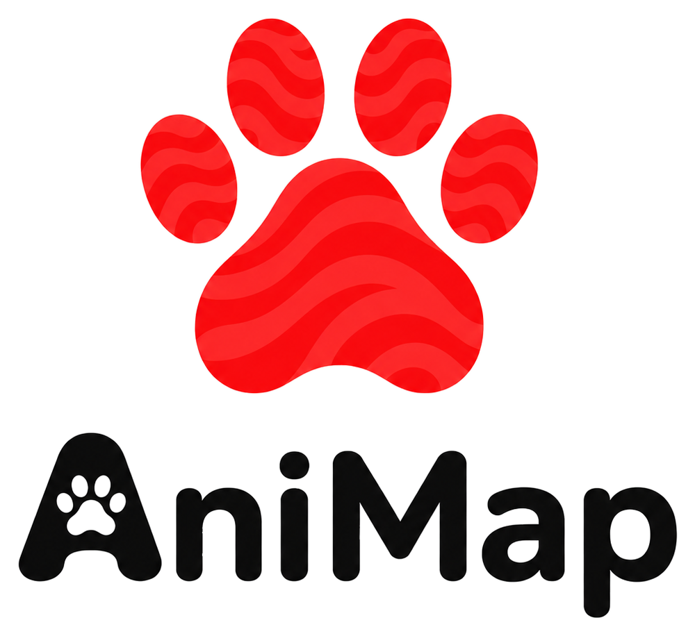

Yürürlük tarihi: 14 Temmuz 2026 · AniMap
AniMap'i kullanarak aşağıdaki koşulları kabul etmiş olursunuz.
AniMap; sokak hayvanlarına yardım, sahiplendirme, topluluk paylaşımı ve hayvan dostu mekân rehberi için kurulmuş bir platformdur. Uygulama, hayvan refahını merkeze alır.
AniMap içerikleri topluluk üretimlidir; doğruluğu için azami özen gösterilse de (moderasyon, doğrulanmış rozetleri) mutlak garanti verilmez. Uygulama "olduğu gibi" sunulur.
Koşullar güncellenebilir; güncel sürüm bu sayfada yayımlanır. Sorular için: support@animapapp.com
AniMap is a community platform for helping street animals, adoption and pet-friendly places. Content harming animals, illegal, misleading or hateful content is forbidden. You are responsible for what you share; all content passes moderation. Adoption listings must be non-commercial; animal sales are forbidden. Walker/sitter arrangements are between members — AniMap is not a party to them. You may delete your account anytime in-app. The service is provided "as is". Contact: support@animapapp.com